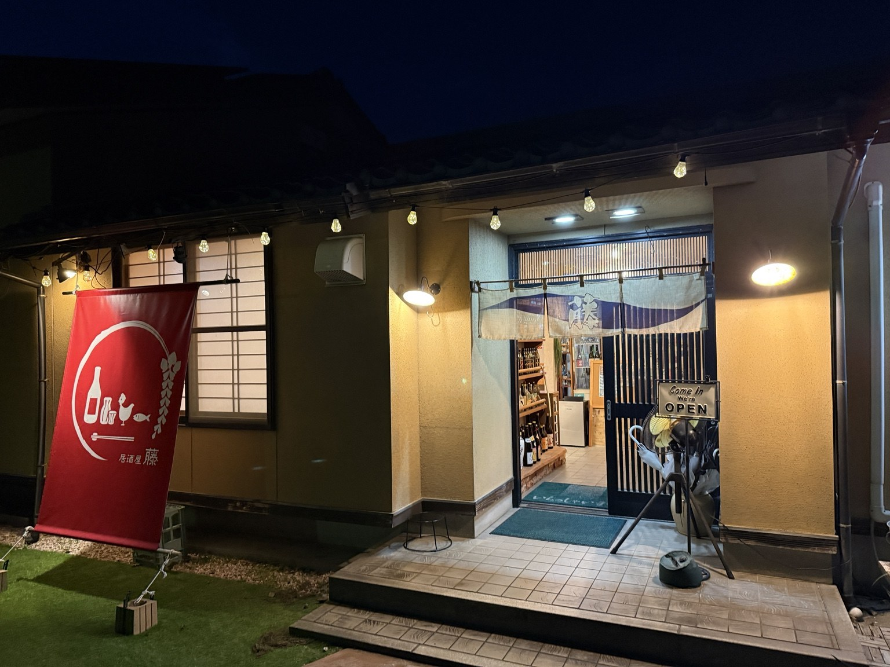
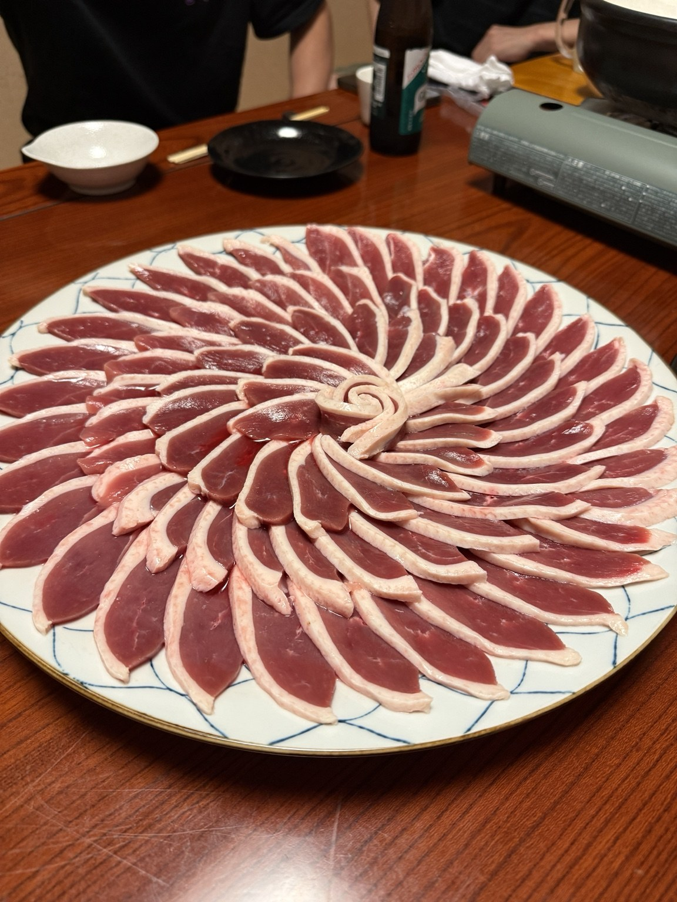
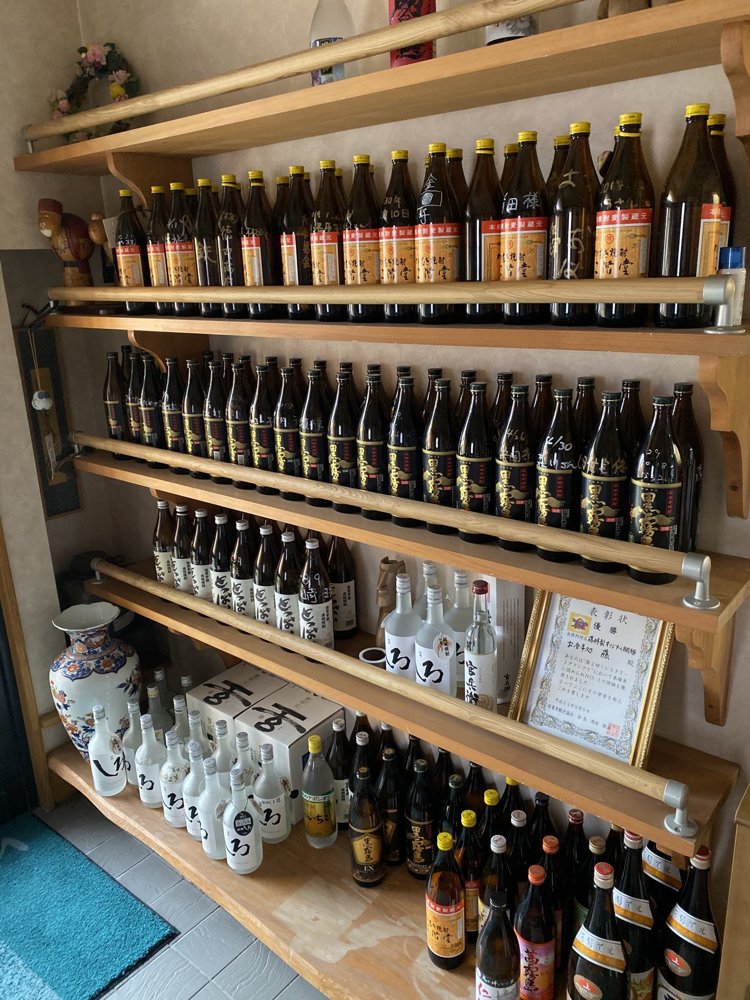
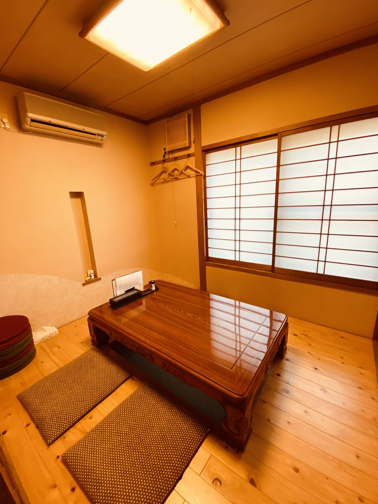
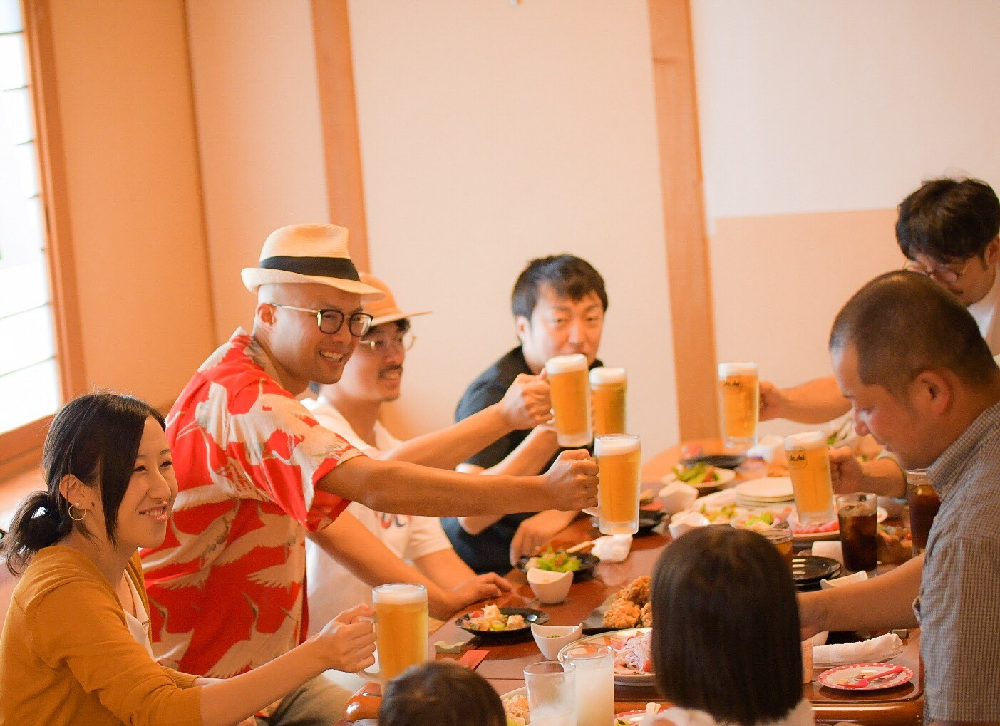
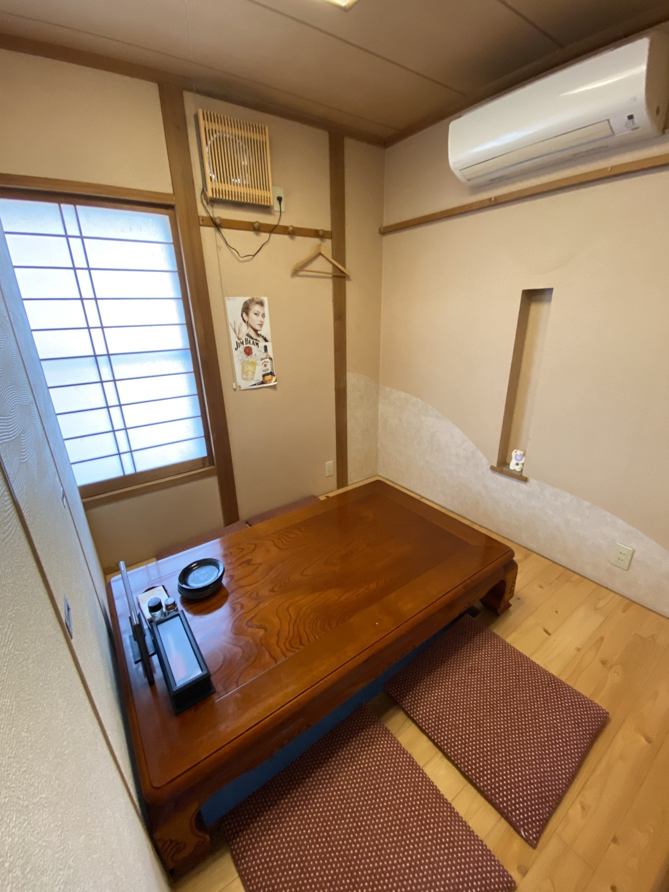

おいしい料理を囲んで、楽しい時間を。
魚料理、串、一品料理、鍋まで。家族や友人との食事から宴会まで、いろいろな場面でお楽しみください。

魚料理、焼きもの、揚げもの、ご飯ものまで。藤の料理を写真でご紹介します。

定番メニューのほか、旬の食材やその時々のおすすめ料理もご用意しています。今月のおすすめは店内メニューやInstagramでご確認ください。
日本酒、クラフトビール、カクテル、焼酎、サワー、ハイボール。定番だけでなく、選ぶ楽しさのあるお酒を揃えています。



